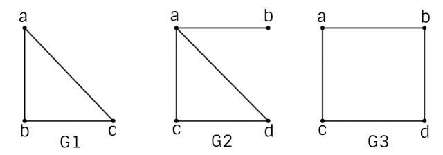
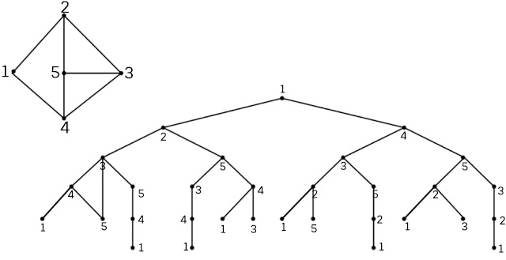

Để xem lý thuyết đồ thị và các định nghĩa về đường đi, chu trình, đồ thị liên thông bạn có thể xem ở đây:
Với đồ thị Euler, chúng ta quan tâm
tới việc duyệt các cạnh của đồ thị mỗi cạnh đúng một lần, thì trong mục này, chúng ta xét đến một bài toán
tương tự nhưng chỉ khác nhau là ta chỉ quan tâm tới các đỉnh của đồ thị, mỗi đỉnh đúng một lần. Sự thay đổi
này tưởng như không đáng kể, nhưng thực tế có nhiều sự khác biệt trong khi giải quyết bài toán.
- Định nghĩa. Đường đi qua tất cả các đỉnh của đồ thị mỗi đỉnh đúng một lần được gọi là
Đường đi Hamilton. Chu trình bắt đầu tại một đỉnh v nào đó qua tất cả các
đỉnh còn lại mỗi đỉnh đúng một lần sau đó quay trở lại v được gọi là chu trình
Hamilton. Đồ thị được gọi là đồ thị Hamilton nếu nó chứa chu trình Hamilton.
Đồ thị chứa đường
đi Hamilton được gọi là đồ thị nửa Hamilton.
- Như vậy, một đồ thị Hamilton bao giờ cũng là đồ thị nửa Hamilton nhưng điều ngược lại không luôn luôn đúng.
Ví dụ sau sẽ minh họa cho nhận xét này.
- Ví dụ. Đồ thị hamilton G1, G3, nửa Hamilton G2.
-

-
Cho đến nay, việc tìm ra một tiêu chuẩn để nhận biết đồ thị Hamilton vẫn còn mở, mặc dù đây là vấn đề trung
tâm của lý thuyết đồ thị. Hơn thế nữa, cho đến nay cũng vẫn chưa có thuật toán hiệu quả để kiểm tra một đồ
thị có phải là đồ thị Hamilton hay không.
-
Để liệt kê tất cả các chu trình Hamilton của đồ thị, chúng ta có thể sử dụng thuật toán sau:
-
void Hamilton( int k) {{ '{' }}
/* Liệt kê các chu trình Hamilton của đồ thị bằng cách phát triển dãy đỉnh
(X[1], X[2],..., X[k-1] ) của đồ thị G = (V, E) */
for y∈Ke(X[k-1]) {{ '{' }}
if (k==n+1) and (y == v0) then
Ghinhan(X[1], X[2],..., X[n], v0);
else {{ '{' }}
X[k]=y; chuaxet[y] = false;
Hamilton(k+1);
chuaxet[y] = true;
}
}
}
-
Chương trình chính được thể hiện như sau:
-
for (v∈V ) chuaxet[v] = true; /*thiết lập trạng thái các đỉnh*/
X[1] = v0; (*v0 là một đỉnh nào đó của đồ thị*)
chuaxet[v0] = false;
Hamilton(2);
-
Cây tìm kiếm chu trình Hamilton thể hiện thuật toán trên được mô tả như sau:
-

-
Chương trình liệt kê các chu trình Hamilton được thể hiện như sau:
-
#include <iostream>
#include <conio.h>
#define max 20
int a[max][max];
int b[max], c[max];
int n;
void init(){{ '{' }}
FILE *f = fopen("CCHMTON.IN", "r");
fscanf(f, "%d", &n);
for (int k = 0; k < n; k++)
for (int j = 0; j < n; j++)
fscanf(f, "%d", &a[k][j]);
for (int k = 0; k < n; k++)
b[k] = 0;
c[0] = 0;
b[0] = 1; // Xuất phát từ đỉnh 0
}
void showpath(){{ '{' }}
for (int k = 0; k < n; k++)
printf("%4d", c[k] + 1); //In ra số hiệu đỉnh+1
printf("%4d\n", c[0] + 1);
}
void Hamilton(int j){{ '{' }}
for (int k = 0; k < n; k++)
if (b[k] == 0 && a[c[j - 1]][k]){{ '{' }}
b[k] = 1;
c[j] = k;
if (j == n - 1){{ '{' }}
if (a[c[j]][c[0]])
showpath();
}
else
Hamilton(j + 1);
b[k] = 0;
}
}
int main(){{ '{' }}
init();
Hamilton(3);
return 1;
}
-
Ma trận liền kề của đồ thị:
-
5
0 1 0 1 0
1 0 1 0 1
0 1 0 1 1
1 0 1 0 1
0 1 1 1 0
-
Output của chương trình:
-
Chu trinh Hamilton: 1 4 5 3 2 1
-
Chu trinh Hamilton: 1 4 3 5 2 1
-
Chu trinh Hamilton: 1 2 5 3 4 1
-
Chu trinh Hamilton: 1 2 3 5 4 1
Nguồn: https://expressmagazine.net/development/4013/thuat-toan-ve-tim-duong-di-va-chu-trinh-hamilton-cai-dat-bang-cc